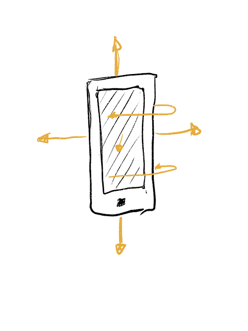
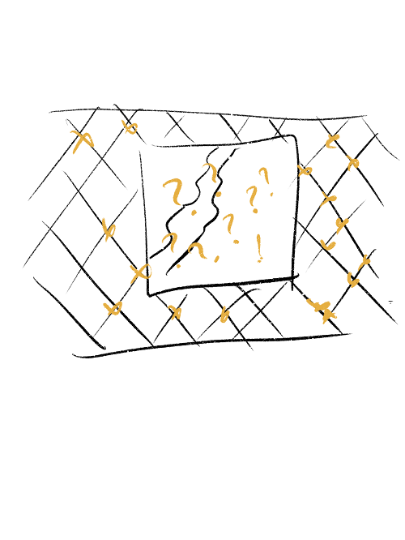
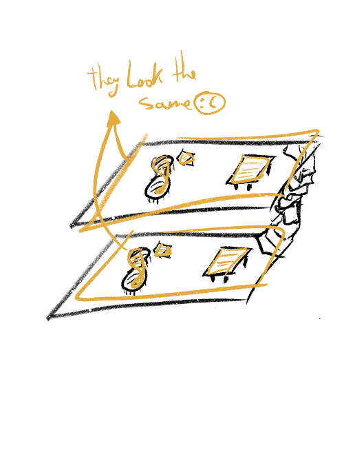
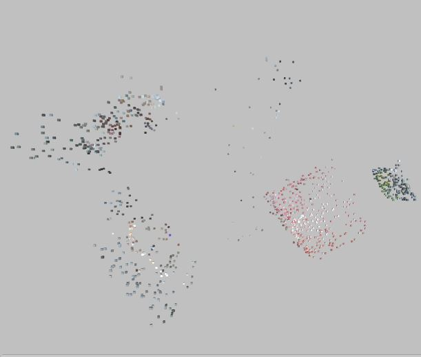

We do localization by basically trying to match a small 3D scan the client makes inside the initial,
bigger scan, you made using InsidAR ScanApp.
1. Main Scan
It all starts with the main scan. You need to store the scans inside your location using InsidAR ScanApp on our servers. Please take into the consideration the Limitations.
2. Client App
The client app should use InsidAR Unity Package in order to be able to grab the 3D data
inside your app as well. The translation/rotation offset between your scan and the main scan is by calling our API.
The Unity package(Unity SDK reference) is able to:
Provide the InsidAR Scan
Offer methods for API Calls: Localization, Persistent Anchors CRUD, Maps CRUD
3. Dashboard
Right now our dashboard is at beginning. It can be used to visualize scanned maps and to move/place
and see anchors inside a map. More features will be available soon.
Getting Started
** InsidAR Unity Package works over ARCore/ARKit 's SLAM system. For this we are actually use Unity's wrapper, ARFoundation. It is still in preview so future updates might be breaking for InsidAR. We used Unity 2018+ with ARFoundation 1.5.0 preview-5 and ARCore 2.1.0 preview 5. In case you try on other versions and it's throwing errors please Contact us and we will try to offer a working version as soon as possible.**
Open Unity Package
The InsidAR Unity Package contains all you need to make a localization app. Check out the example scene for how it works or follow the next steps in a new project!
Open new Unity Project and import InsidAR package
Import ARFoundation(1.5.0 preview 5) and ARCore(2.1.0 preview 5) from Package Manager
Switch platform to Android
Check 'Allow unsafe code' inside player settings. We do this since it's required for getting the image from AR Camera.
If on Android set min API Level to at least 24 and set a correct package name.
Add ARSession and ARSessionOrigin to scene (and delete the default camera)
Either:
Add ARSession Origin to scene. Add ARPointCloudManager component to it. Select AR Camera and set tag to MainCamera
Or - Drag our ARSessionOrigin to scene
Drag the InsidARManager prefab in the scene
Drag ARPointCloudManager to the empty attribute inside FeaturePointExtractor script of InsidARManager
Drag the ARCamera under ARSessionOrigin inside InsidARManager - ComputerVision - CameraImageManager
Setup the API Key inside InsidARManager script
That's it! Now you should be able to scan (FeaturePointExtractor) and API endpoints(NetworkManager)
Tutorials
Limitations
3D scans are awesome. For the scan we've added our layers of algorithms over ARCore and ARKit's SLAM
enginges. Therefore most limitations can also be found in those libraries. Although the scan is
quite consistent, there are a few points where scans can be just noise, become a source of future
errors or simply ambiguity.
Before and while scanning, please don't just orbit around, but also move. Translation is important for accurately measuring 3D points positions.

Recommended thresholds
The parent scan should at least 2.000 points, while the candidate scans at least 750.
Blurred or no-contrast images
As we work with contrast points mostly, we bypass low contrast images, such as white walls, or blurred ones.
Glass and Reflections
Reflections, mirrors, windows and so one are not only invisible to the Scanner but also add random
geometry based on the shine and the image they reflect.

Repetitive patterns
As we use color and structure, if two areas of the same building look almost the same, they will
look the same for the algorithms as well.

Big visual changes
If a scan is stored but big changes happen, such as moving a whole isle in a store, painting the
walls etc, the recognition could be less exact or even stop working.
Privacy
Fine matching
For each location we store a 3D colored point cloud such as this one below. For each we store color information and the 3D position relative to an arbitrary origin.

Coarse matching
In cases where the buildings are too big and for performance reasoning we sometimes recommend preceeding our 3D
matching algorithms with a basic machine learning model that allows us to to recognize first if the
user is in the right area, before starting to scan. For this, right now, we train on a 256x256 video of the
location, for which we only store the trained model on the server. The user will send images to the trained model to
get the classification.
Unity Package Reference
InsidAR Manager
Here you can setup the main variables
serverURL
apiKey
Scan Manager
This class manages the scan workflow
numberOfPoints
groundHeight
SwitchShouldScan()
Switches between scanning and not scanning states. While this is opened the scan keeps growing.
ClearScan()
Deletes all scan points
NetworkManager
Methods for calling most API endpoints.
OffsetPositionDomain offsetPosition
Object where the relative position/rotation from parent scan is stored. This is usually setup after response from calling MatchScan().
public delegate void OffsetPositionDomain(string response)
void MatchScan(string scanName)
The server can store multiple scans identified by the scanName. Triggers OnScanMatched and sets offsetPosition.
void GetScanNames(ProcessResponse callback)
Get a list with names of all your scans stored on the server.
DownloadAnchors(string scanName)
Get positions of all stored anchors relative to the AR camera